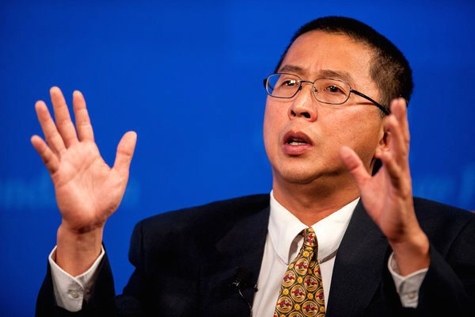

2015-02-27 19:28:00
我在前文《天文物理的尖端》曾提到，哈佛有很强的天文物理研究團隊。不過這些團隊不屬於哈佛物理系，而是有自己的天文系（Department of Astronomy）。這是因為雖然哈佛物理是美國歷史上的第一個物理系，但是它的前身Jefferson Physical Laboratory一直到1884年才因為新開的John Hopkins University在科學研究上的競争威脅，靠著校友Thomas Jefferson Coolidge（如果這個名字有點耳熟，並不是巧合；他是美國開國元勳Thomas Jefferson的外曾孫，不過他和後來的總統Calvin Coolidge不是近親）的捐款建立的；而Harvard College Observatory （HCO，哈佛學院天文觀測台，天文系的前身）則早在1839年就成立了。
在1846年，美國國會靠著英國人James Smithson的遺贈，在華盛頓成立了Smithsonian Institution（原本也叫做United States National Museum，美國國家博物館）。1890年，建立了Smithsonian Astrophysical Observatory（SAO，史密森天體物理觀測台）。1955年，SAO搬家到Cambridge，成為HCO的鄰居。1973年，两家正式把資源合併起來，建立了Harvard-Smithsonian Center for Astrophysics（CfA）；HCO和SAO成了空心的控股機關。這其實是很合理的：SAO有聯邦預算和跟NASA的關係，而哈佛則有學術人才，所以CfA自然成了美國首屈一指的天文物理研究機構。CfA並不在哈佛校園裡，而是在Cambridge北邊的一座小丘上；我在校内打工的時候，曾在CfA當了两年警衛，常常到它的圖書室裡找東西讀。
2000年的總統選舉，共和黨靠著在佛羅里達州的做票疑案而険勝民主黨的Al Gore，後者從此專心推廣普及大眾對全球暖化的認知。全球暖化其實在早有端倪，但是在Gore之前，只有專業科學家了解它的規模和危険。到了2006年，一部以Gore的演講稿為核心的電影《An Inconvenient Truth》（這次台灣的《不願面對的真相》翻譯得比大陸的《難以忽視的真相》要好些）轟動一時，Gore也因此獲得2007年的諾貝爾和平獎，成為少數真正對人類有大貢獻的和平獎得主之一。美國的石油財團一向對政府的政策有很强的控制力，整個20世紀聯邦政府到處建高速公路和機場，但就是一毛納税人的銭也不花在鐵路上。全球暖化對國家和一般老百姓都可能有極大的惡劣影響，但是對石油財團來說，减縮碳排放才是真正的威脅。我在前文《美式經濟學是騙人把戲的又一表徵》裡曾提到，美國香烟公司靠著收買科學界的賣淫者，製造假科學論文以混淆視聽，從而多獲得了半個多世紀的黑心利潤，此後成為每個美國財團的典範，這次也不例外。
於是近年來，全球科學界成千上萬的專家都挺身出來證實全球暖化的嚴重性，但是在美國始終有幾個所謂的“科學家”高唱反調。好玩的是，右翼媒體例如Fox News，只有這幾個唱反調的能上新聞，所以Fox的觀眾絶大多數認定全球暖化是謊言。美國在富豪全面反撃後的40幾年（參見前文《富豪口袋裡的國家》）裡，反智傾向大幅增長，到現在已經有24%的人口不相信地球繞著太陽轉，這當然是因為人民越笨就越容易受財團的謊言擺布，所以Fox的主要任務就是要讓人民變得越笨越好。雖然這幾個寫假論文的人大多連博士學位都没有，有學位的也不是做氣象學（Climatology，或稱地球科學，Earth Science）的，Fox News卻一様把他們當學術權威來報導。但是要忽悠百姓，有個響亮的頭銜還是有用的，所以石油財團最近幾年的王牌就是打著“哈佛學者”名銜的Willie Soon；當美國參議院環境委員會（United States Senate Committee on Environment and Public Works）主席Jim Inhofe在參議院高喊“全球暖化是謊言”（“Global Warming Is A Hoax”，他居然還出了書，叫《The Greatest Hoax: How the Global Warming Conspiracy Threatens Your Future》，參見http://www.amazon.com/The-Greatest-Hoax-Conspiracy-Threatens/dp/1936488493），引用的就是Willie Soon的論文。

Willie Soon，這就是學術男妓的嘴臉。
Willie Soon是馬來西亜華僑，在南加大獲得工程博士學位，博士論文題目是《Non-equilibrium kinetics in high-temperature gases》（《非平衡高温氣體動力學》），這是超音速飛機在高空飛行的問題，屬於航空工程，和地球科學没有關係。他隨後到CfA當博士後研究員（Post-Doctoral Researcher），任期屆滿之後找不到工作，他不知如何安排了外界（亦即石油財團的代理人，例如American Petroleum Institute，The Southern Company，Charles G. Koch Charitable Foundation和Donors Trust；2008年時被發現他在1997年到2008年間一共收了100萬美元）出銭讓他繼續在CfA掛名當研究員。在這期間，他的論文只有两篇能出版在學術期刊上：第一篇在2003年發給一個小期刊叫《Climate Research》，内容錯誤百出，此後再也没有歐美的學術期刊願意刊他的論文，所以他一直到2015年才想辦法又出了一篇論文在《中國科學》雜誌社的《Science Bulletin》（《科學通報》）上。這是中國科學院的相關英文期刊；這篇論文對中國科學界的國際聲譽打撃很大，因為顯然主編是拿了銭的。
2015年二月21日，紐約時報和英國的衛報重新做了對Willie Soon收銭的研究（這是因為Smithsonian是聯邦機構，所以帳目必須公開；報導的文章在這裡：http://www.nytimes.com/2015/02/22/us/ties-to-corporate-cash-for-climate-change-researcher-Wei-Hock-Soon.html?_r=0和這裡：http://www.theguardian.com/environment/2015/feb/21/climate-change-denier-willie-soon-funded-energy-industry），研究從上次的2008年起到2014年，結果是他六年裡總共收了120萬美元。最可笑的是他在和金主聯繫的電子信件裡，把自己的論文稱為“Deliverables”（“出貨”）；金銭交易的斧鑿非常明顯。
我原本對Willie Soon能在CfA混這麼多年，是十分吃驚的。在两次被揭露學術賣淫之後，一個没有永久教授職的人居然没有被馬上解聘，更是奇怪。一直到二月25日，哈佛的校報Harvard Crimson才做出了解釋（詳見這裡：http://www.thecrimson.com/article/2015/2/25/willie-soon-harvard-name/）：原來Willie Soon是Smithsonian那邊的雇員，哈佛對他一點管理權也没有。不過只要是和CfA有關的人都可以拿到哈佛的電子信箱和電話號碼，而Willie Soon就憑著這些關連在媒體上自稱是哈佛學者。哈佛的教授和學生都對這事群情激憤，所以校方正在和Smithsonian交涉之中；不過Willie Soon有整個共和黨為後盾，2008年時已經大事化小、小事化無，這次再被抓包引起的公憤只怕也仍會無疾而終。